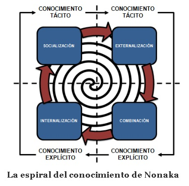
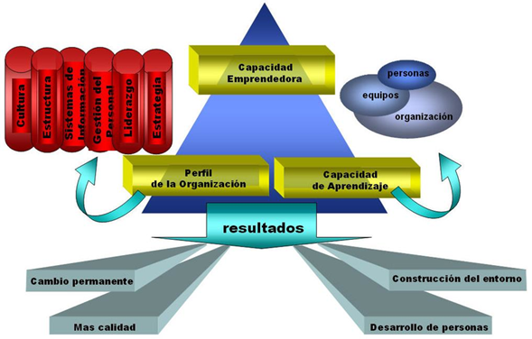
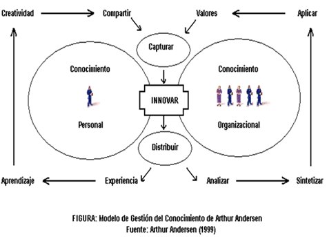
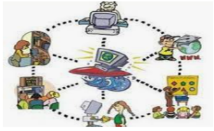

El proceso de creación del conocimiento para Nonaka y Takeuchi (1995) es a través de un modelo de generación de conocimiento mediante dos espirales de contenido epistemológico y ontológico. Es un proceso de interacción entre conocimiento tácito y explícito que tiene naturaleza dinámica y continua.
Se constituye en una espiral permanente de transformación ontológica interna de conocimiento.

Una de las características esenciales del modelo es la interacción de todos sus elementos, que se presentan como un sistema complejo en el que las influencias se producen en todos los sentidos. La estructura organizativa, la cultura, el liderazgo, los mecanismos de aprendizaje, las actitudes de las personas, la capacidad de trabajo en equipo o en conjunto, no son independientes, sino que están conectados entre sí.
Desde la perspectiva individual, el modelo integra la responsabilidad personal de compartir y hacer explícito el conocimiento para la organización. Mientras que, desde la perspectiva organizacional, señala la responsabilidad de crear la infraestructura de soporte para que la perspectiva individual sea efectiva, creando los procesos, la cultura, la tecnología y los sistemas que permitan capturar, analizar, sintetizar, aplicar, valorar y distribuir el conocimiento. Se han identificado dos tipos de sistemas necesarios para el propósito fijado:
ENFOQUES PARA LA GESTIÓN DEL CONOCIMIENTO:
Su enfoque se basa en 2 aspectos principales:
Enfocado a La Gestión del Conocimiento organizacional en donde las empresas generan conocimiento para mejorar su competitividad a nivel organizacional lo cual le permite estar mejor posicionado en el mercado.
Enfocada a La Gestión del Conocimiento orientada al aprendizaje en donde el seguimiento y valoración de los aprendizajes son pilares fundamentales los procesos de construcción social y el uso del conocimiento como motor de cambio se enfoca en la transdisciplinariedad para abordar procesos complejos en la compañía teniendo en cuenta el aspecto teórico/conceptual y metodológico para el desarrollo de los mismo.
Existen otros enfoques
Basados en la Tecnología: Este enfoque se basa en los avances que se han realizado tanto en los campos de la información como de la comunicación que han posibilitado la construcción e implementación de herramientas que pueden llegar a permitirnos la gestión del conocimiento de las organizaciones.
Basados en las Ciencias de la Información: Se enfocado a Libros, documentos, publicaciones periódicas, etc. Sin embargo, aunque estos conocimientos son imprescindibles para llevar a cabo cualquier proyecto para la gestión del conocimiento en las organizaciones, la GEC debe de ir más allá de la gestión documental, aunque se trate del formato electrónico

Basados en la Personas: Esta concepción está enfocada en que el elemento clave para la GEC son las personas, puesto que son éstas las que crean los conocimientos y las que lo utilizan en su actividad. Por lo tanto, se supone que lo que debe de hacerse es crear las condiciones para facilitar e incentivar que las personas puedan llevar a cabo adecuadamente los procesos de creación y transmisión del conocimiento.
Basados en la Economía: Enfocado a valorar el capital intelectual de las organizaciones. La idea consiste en que una vez llegados al establecimiento de dónde se encuentra el valor de los activos inmateriales, será muy sencillo gestionarlos. Desde un punto extremo, la GEC se convierte en una tarea de contabilidad de valoración de activos inmateriales de la organización.
REFERENCIAS BIBLIOGRAFICAS
https://dosbuhos.co/3-modelos-de-gestion-del-conocimiento-en-las-organizaciones/
Microsoft Word - Gestion del conocimeinto y sistema - Montreal 2014.docx (ecosad.org)
https://ecosad.org/phocadownloadpap/gestion-del-conocimeinto-y-sistema-montreal-2014.pdf
http://gestiondelconocimientoelectivaiv.blogspot.com/2013/05/cuatro-enfoques-para-la-gestion-del.html